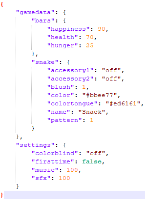
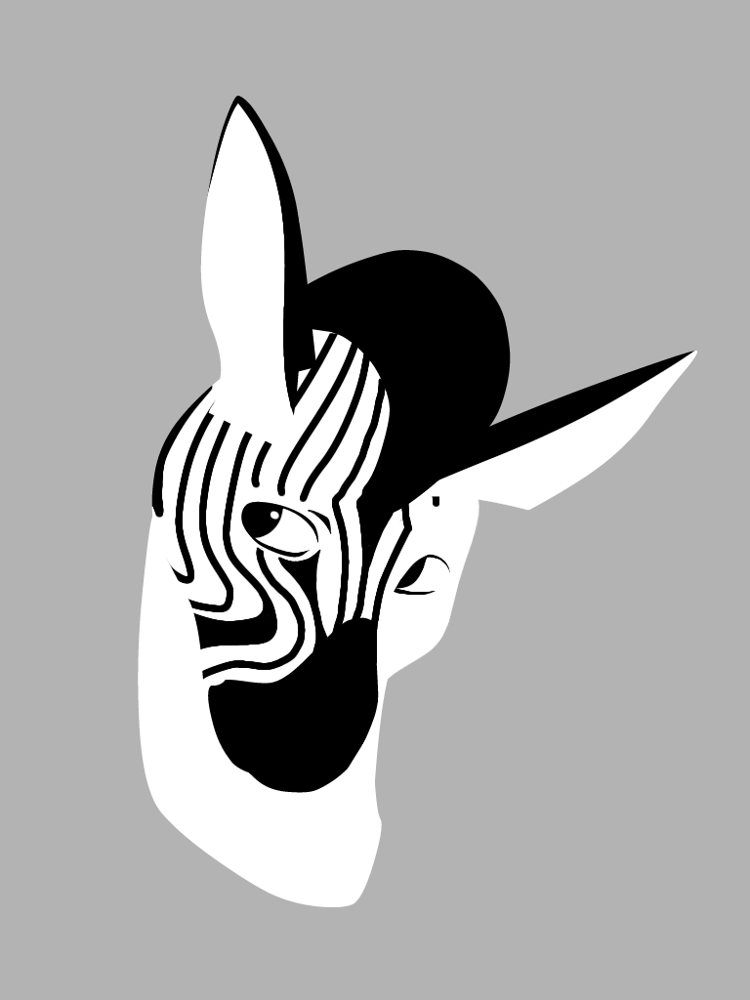
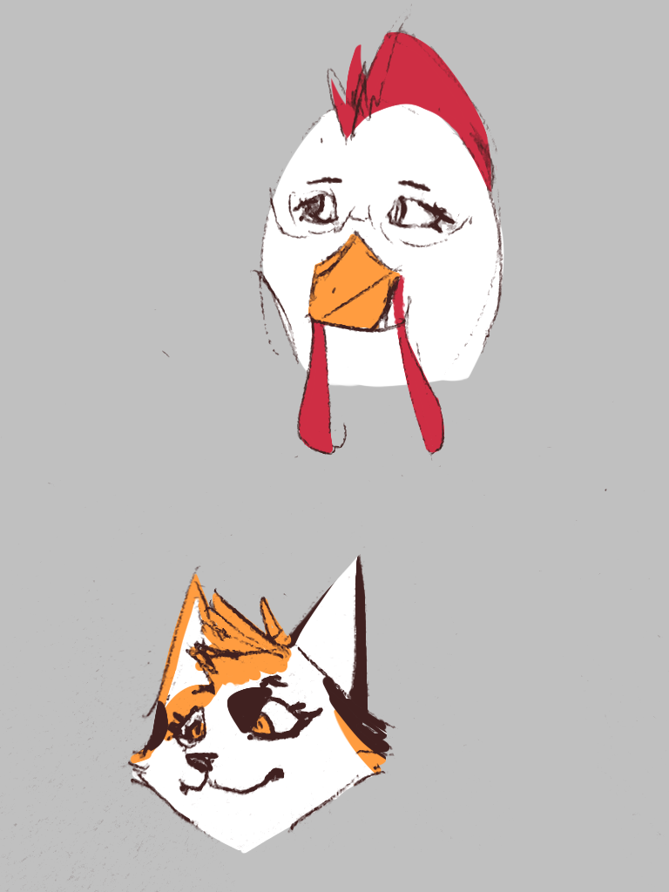
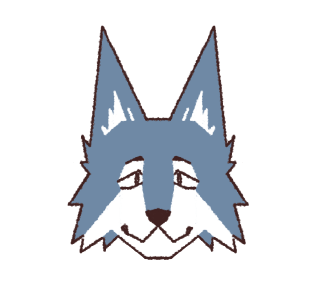
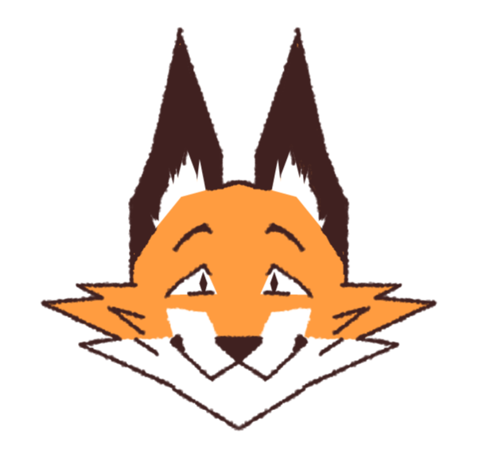
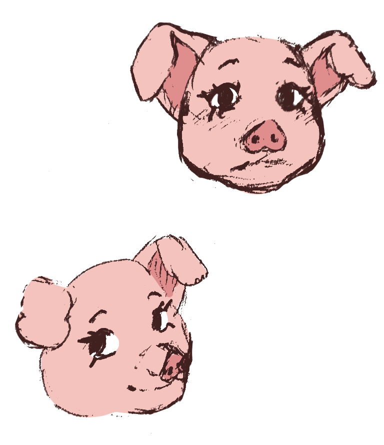

Idée
J’ai toujours rêvé de créer un jeu vidéo original. Un jour, je me suis donc lancée dans la recherche d’idées novatrices, en explorant de nouvelles mécaniques et un thème qui me toucherait vraiment.Je voulais créer un jeu qui parle aux jeunes, comme moi. Étant moi-même en fin de lycée, je me suis dit que le thème de l’amitié perdue à cette période serait idéal pour un jeu centré sur les émotions. Je trouvais ça personnellement intéressant, étant quelqu’un qui n’avait quasiment pas d’amis à l’école.
Dès le départ, j’ai voulu que la mécanique de jeu serve directement la narration. Mon objectif était de créer une expérience simple en apparence, mais chargée de sens.J’ai donc imaginé un gameplay centré sur le tri de fichiers numériques — une activité banale, mais ici porteuse de mémoire et de narration.Tout au long du projet, j’ai structuré mes idées dans un Game Design Document que j’ai enrichi à mesure que le jeu prenait forme, en itérant sur les mécaniques, les dialogues et le rythme.
Conception
J’ai ensuite cherché à donner vie aux mécaniques plus techniques, comme la sauvegarde. Pour cela, j’ai fait en sorte que les données du jeu soient stockées dans des fichiers JSON structurés. Ce même système est utilisé pour déterminer quels dialogues ou choix le personnage principal doit dire, ainsi que pour sélectionner le sprite approprié.

Structure d'un fichier JSON
Direction artistique
Comme le jeu se centre sur le thème de la jeunesse et de la nostalgie, et que l’école est un pilier central de cette période, je suis partie sur une esthétique inspirée des écoles américaines et des diners old-school, pour accentuer le côté nostalgique.J’ai décidé de contraster visuellement le présent et le passé: le passé est coloré et vivant, tandis que le présent est composé de tons neutres et naturels, afin de renforcer l’aspect mélancolique.J’ai appliqué la même logique au character design: j’ai choisi différents animaux pour les personnages afin de créer un contraste entre les espèces. Le groupe d’amis d’enfance est composé d’animaux typiques des fermes ou des contes, tandis que les personnages de la nouvelle université du protagoniste sont des animaux exotiques.





Charadesign
Galerie
Exemple de fichiers trouvés dans le jeu
Logo de la nouvelle école du protagoniste